|
|
|
As we have mentioned in section 9.2.2, the representation of an external object taken from the individual reality inside the memory of an IPS is considered as an abstract concrete object, that is an object with the first and the lowest abstraction level - the unit basic level. This abstract object has always an external material correspondent, source of the information carrier fluxes which were described in chapter 8.
Comment 9.2.4.1: When we discussed about ISS in chapter 8, we were saying that any material system is a support for its natural information (types of eferent fluxes, sizes, form etc.), information which cannot be changed without altering the structure of that particular MS. But when a MS must be the support of a certain information, the structure of this system (its syntactic value) must be easily and deterministically variable, depending on its containing information. This is the difference between ISS as systems specialized in the information storage and the information stored in any external material object which is not specialized in such a function. However, an object which is external to an IPS, either it is an external ISS or a certain MS, is considered for that IPS as a real object which is associated to an abstract concrete object.
The abstract concrete object is associated (in case of biotic IPS) to all the attributes from the generic object model described in chapter 3:
P1 - set of the qualitative properties provided by the set of specialized input units (type of the sensorial organs which perceive the external object);
P2 - support attribute type of the sensorial distributions is the spatial position;
P3 - distribution types of the attributes P1 (sensorial distributions presented in annex X.18);
P4 - size of the support domain (volume, dimension, interval);
P5 - object’s internal reference system;
P6 - moment t (present) of the simultaneous existence of all these attributes.
All these model properties (provided by the input units of IPS) which are associated to a concrete object contain a very large information amount (mostly, the property P3), alongside the external attributes (attributes associated to the property P5 against an external reference of the object). The abstract objects Obx1 or Obx2 which were above mentioned are examples of such abstract concrete objects, with the specification that the two objects are identical (they have the same model), only their external spatial positions being different. If we shall consider that 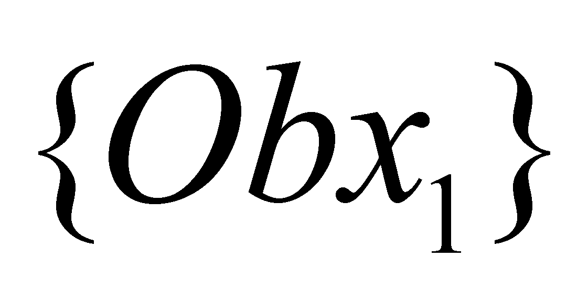 from the relation 9.2.2.1 is a heap of information (the set of all the qualitative and quantitative data associated to the concrete object Obx1), and 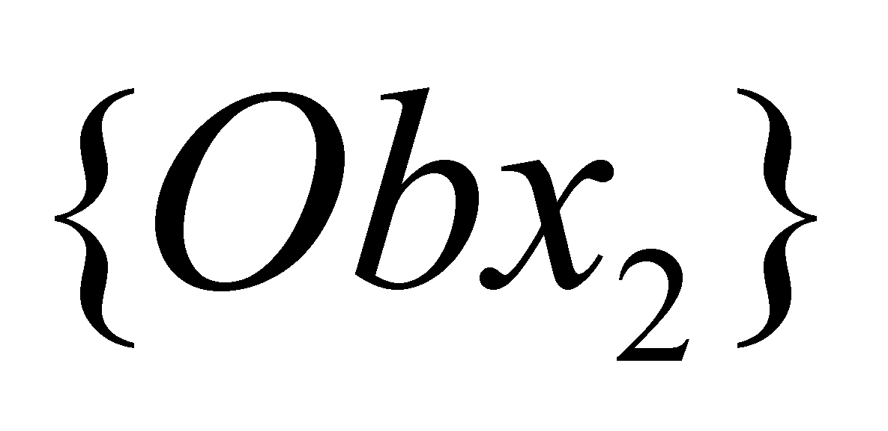is another heap of information associated to the concrete object Obx2, by assuming that the two objects are identical, the common component of the two information heaps is another abstract object which represents the second level of abstraction - the abstract object Obx - object which represents, as we have previously noticed, a model of a class of abstract objects.
Definition 9.2.4.1: The common model of a class of abstract objects is named notion.
Comment 9.2.4.2: As we have mentioned above, the notion is an abstract object which does not represent a real external object any longer, otherwise speaking, it is an object which may be realizable at the abstract level, but which cannot be realizable at the material level; it is nothing but a finite information amount associated to an internal ISS of an IPS. For becoming a material realizable object, the notion must be associated to the specific attributes in order to become an abstract concrete object - the only type of abstract object materially realizable - provided that its attributes to comply with the material achievement conditions which are far more restrictive than the abstract achievement conditions.
As we have pointed out in chapter 3, the common component of the two information blocks and is obtained by means of the function used for extracting this component:
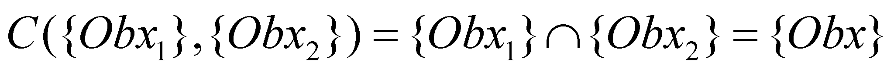 (9.2.4.1)
as a result of this abstract process, we obtain object 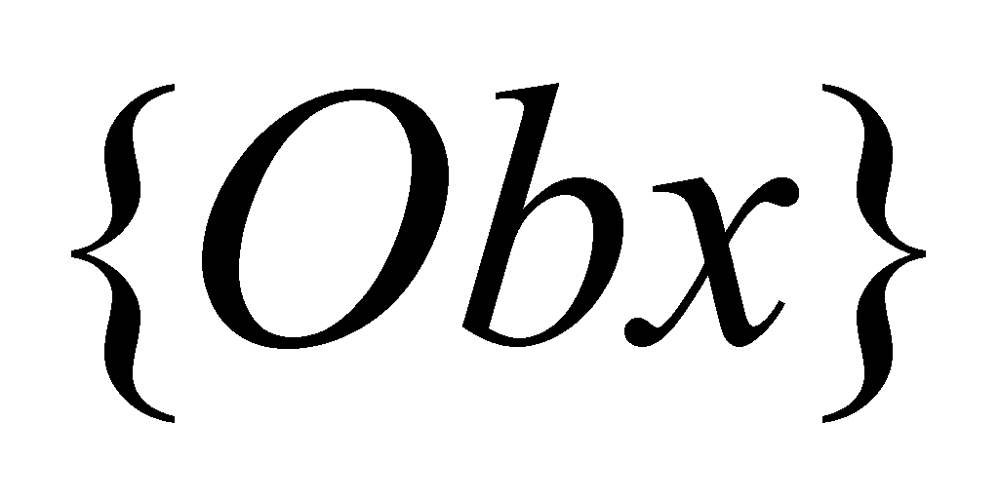from the relation 9.2.3.3.
Comment 9.2.4.3: The extraction function of the common component from a set of abstract objects is a function which according to the objectual philosophy is considered to be implemented in all NIPS, because this function is based even on the organization method of the processes guided by the DNA molecule. If a new organism undergoes a synthesis process, this process always starts with the common components (stem cells) and it continues with the differential components (cell differentiating processes). In case of the abstraction, we are dealing with a reverse process, from differential (abstract concrete objects) towards common (the notion). In this stage of presentation, it is the moment to observe with a certain amount of surprise that the abstraction processes, as they have been defined in this paper, can also occur at other bio-systems which own a somatic nervous system (which have sensory organs used for external fluxes). The mammals, for instance, have perception systems which are very similar with the human’s perception systems, which makes obvious that the first abstraction level (inherently attached to any sense organ) is present in this case, but it is very likely that a second level to be also found - that is the class model (notion). The fact that the people, unlike the rest of the animals, have associated a name to a notion within the natural language (as we are about to see later on), it does not mean that abstraction processes cannot occur at the other animals as well.
In a general case in which we have n abstract concrete objects, , …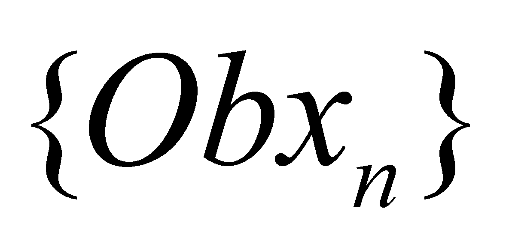, the relation 9.2.4.1 becomes:
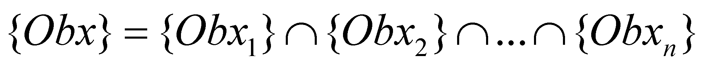 (9.2.4.2)
according to the above relation, the notion Obx is the common model of n abstract concrete objects of type Obxk (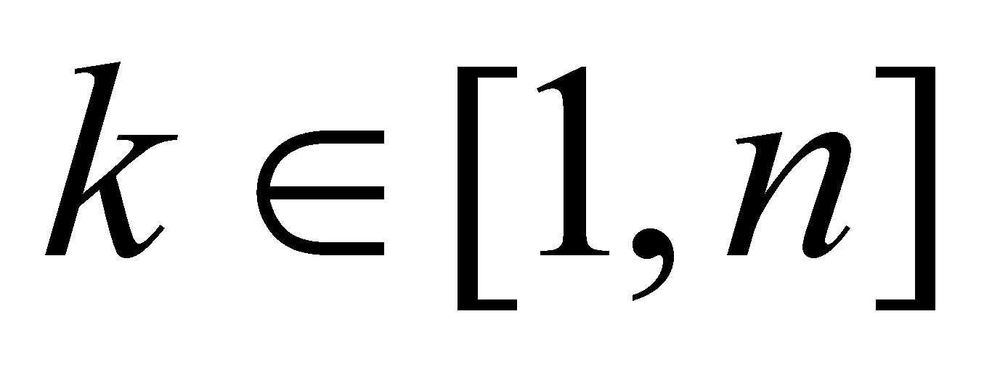). Obviously, the support set of the notion Obx is made-up in such case from n objects, and the semantic information amount 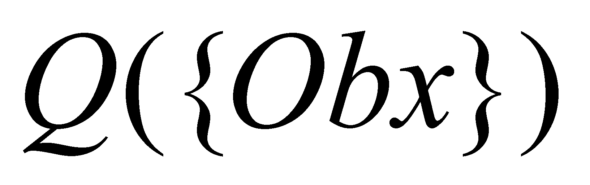 which is included in the common component of n semantic information heaps is less than the information amount 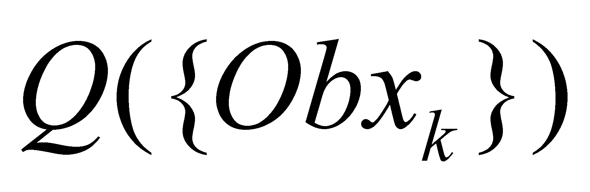 contained in any of the heaps 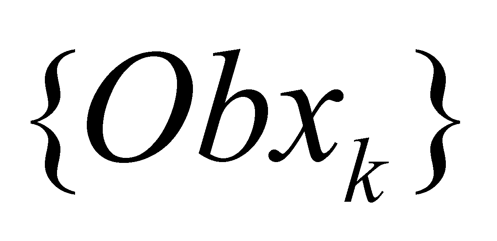, because the intersection of some sets has always a lower number of elements than any of the sets which are intersected one another.
By considering another notion Oby, with a second-rank abstraction level, which has m objects into the support set:
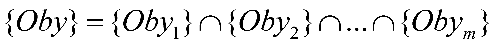 (9.2.4.3)
If the notions Obx and Oby have a common component:
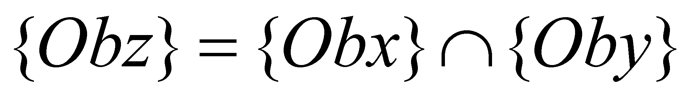 (9.2.4.4)
then, the abstract object Obz shall have a third-rank abstraction level, and its support shall be a set made-up from two notions.
It is very important that the reader to notice that the result of the first abstraction level is a sensorial abstract object, with a single concrete support object, the second abstraction level generates a notion with n or m support abstract concrete objects, and the third abstraction level generates a notion whose support set is entirely made-up from notions. On the other hand, the notion Obz with third-rank abstraction level is the common component of those 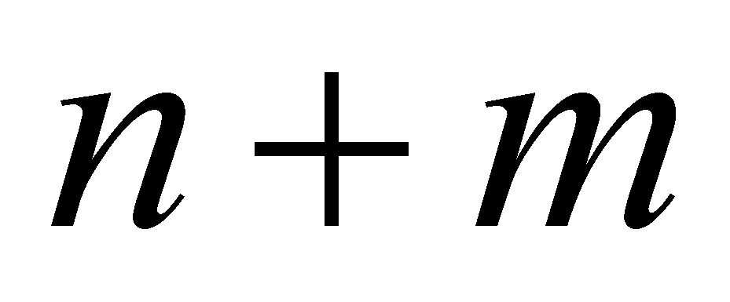 concrete objects which make-up the support sets of the notions Obx and Oby, and thus, we may observe that a notion with a third level of abstraction has as its support a set which represents the union of the support sets of its constitutive notions.
Finally, there are few conclusions which may be drawn regarding the abstraction processes:
There is a direct dependence relation between the abstraction level of an abstract object and the cardinal of its support set;
There is a reverse dependence relation between the abstraction level of the abstract object and the semantic information amount owned by that object (as a result of the repeated intersections between the information heaps). The first abstraction level (the abstract concrete object) contains the greatest information amount;
The abstract objects with the first abstraction level have real objects as their support; the abstract objects with the second abstraction level have abstract concrete objects as their support; the notions with upper abstraction levels have a support set which is entirely made-up from notions;
The notions with the highest abstraction level within a certain language belong to the categories class (according to the terminology used by the classic philosophy).
Copyright © 2006-2011 Aurel Rusu. All rights reserved.